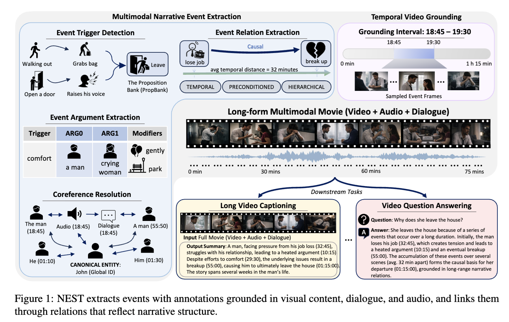
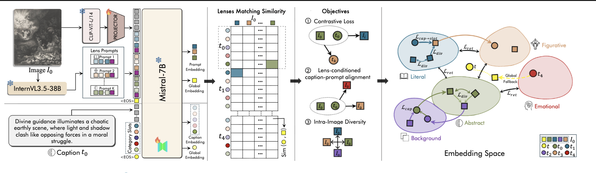
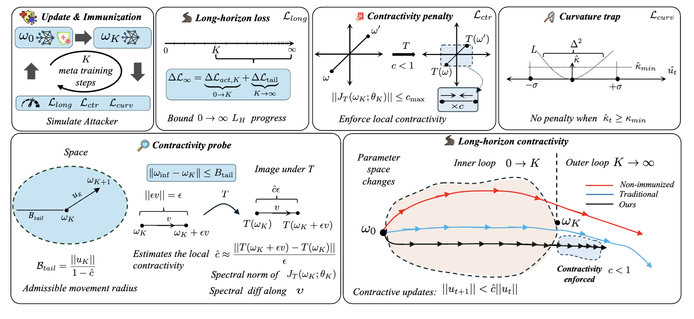
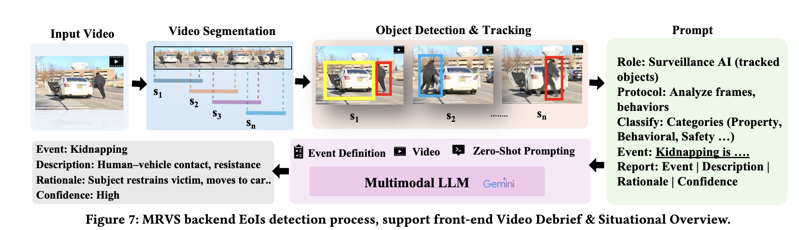

About
Ph.D. student in Computer Science at Virginia Tech, working with Dr. Chris Thomas on video-language understanding and cross-modal reasoning. Previously M.Sc. at George Washington University.
Research Interests
Vision-Language Models
Multimodal Reasoning
Cross-Modal Retrieval
Information Extraction
News
May '26Joined Amazon as an Applied Scientist Intern
Apr '26Received the Cyber Innovation Scholar Travel Grant
Feb '26Lenses and CLAMP accepted to CVPR 2026
Jan '261 paper accepted to ACM CHI 2026
Jan '261 paper under review at ACL 2026
Nov '252 papers (Lenses, CLAMP) under review at CVPR 2026
Oct '25SIGMA accepted at AAAI 2026 LMReasoning
Sep '251 paper accepted at EMNLP 2025 (Main)
Selected Publications

NEST: Narrative Event Structures in Time for Long Video Understanding
EMNLP 2026 · Under Review

Lenses: Toward Polysemous Vision-Language Understanding
CVPR 2026 (Main)

Immunizing Models Against Harmful Long-Horizon Fine-Tuning via Contractive Optimization Dynamics
CVPR 2026 (Main)


Benchmarking and Mitigating MCQA Selection Bias of Large Vision-Language Models
EMNLP 2025 (Main) · *Proposed and implemented the bias mitigation method

ENTER: Event Based Interpretable Reasoning for VideoQA
NeurIPS 2024 MAR Workshop · Spotlight
See Google Scholar for full list.
Education

Virginia Tech · Ph.D. in Computer Science
2024 – Present · GPA: 4.0 · Advisor: Dr. Chris Thomas

George Washington University · M.Sc. in Computer Science
2022 – 2023 · GPA: 3.76
Honors & Awards
- 2025: Pratt Fellowship, Virginia Tech
- 2023: State Program Scholarship for Azerbaijani Youth Abroad
- 2020–22: 3× 1st Place, National AI Competition in ML Applications
- 2020: Top 15 at III World Robot Olympiad, Hungary
- 2018: Presidential Scholarship for Academic Excellence
- 2017: Golden Medal Graduate (Top 0.1% of 90,000 students)
Patents
Academic Service
- Teaching: CS3114 Data Structures & Algorithms (Spring 2025), CS5644 ML with Big Data (Fall 2024)
- Reviewer: ACM TIST 2025, EMNLP 2025, WACV 2026, CVPR 2026, NeurIPS 2026